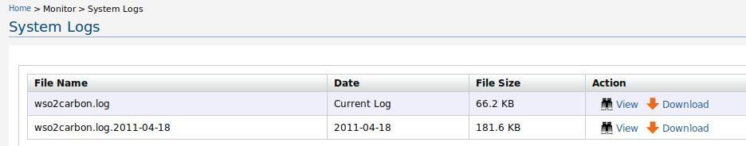
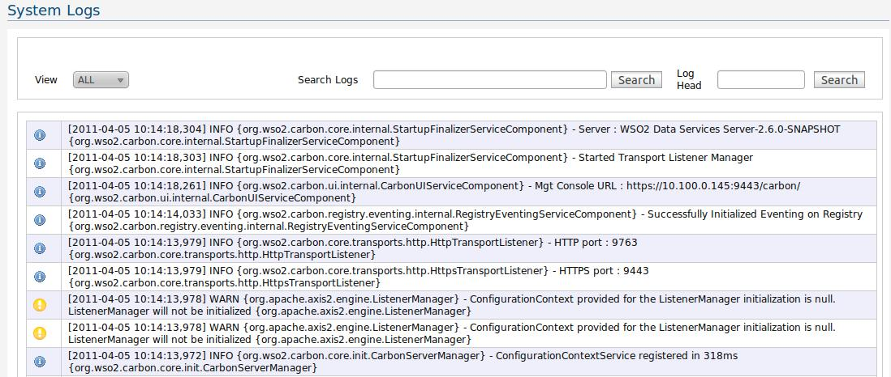

This page displays information regarding the log files of the current product. Further, it has the feature to download and view the log files acccording to the user preferance. The log files can be retreived in two ways, 1) If syslog-ng is configured log files are taken from the remote location where the log files are hosted using syslog-ng server. 2) If syslog-ng is not configured log files are taken from the local file system (super-tenant or Stand alone apps).
The log messages, displayed in this page are obtained from a memory appender. Hence, the severity(log level) of the displayed log messages are equal or higher than the threshold of the memory appender. For more information on appenders, loggers and their log levels, please visit here.

The location of the log files on disk is specified in the log4j.configuration file.
Note:Tenant Specific Logs To display tenant specific information, you need to configure syslog-server, In the navigator, under Configure, click Logging. The Logging related page appears to configure the syslog-ng server.
This page displays all the system logs from bottom-up manner. You can also search for a particular log by a keyword using the Search Logs feature.

Figure 1: Monitor Logs
The log messages, displayed in this page are obtained from a memory appender. Hence, the severity(log level) of the displayed log messages are equal or higher than the threshold of the memory appender. For more information on appenders, loggers and their log levels, please visit here.
The location of the log files on disk is specified in the log4j.configuration file.
Note:Tenant Specific Logs To display tenant specific information, you need to configure syslog-server, In the navigator, under Configure, click Logging. The Logging related page appears to configure the syslog-ng server.